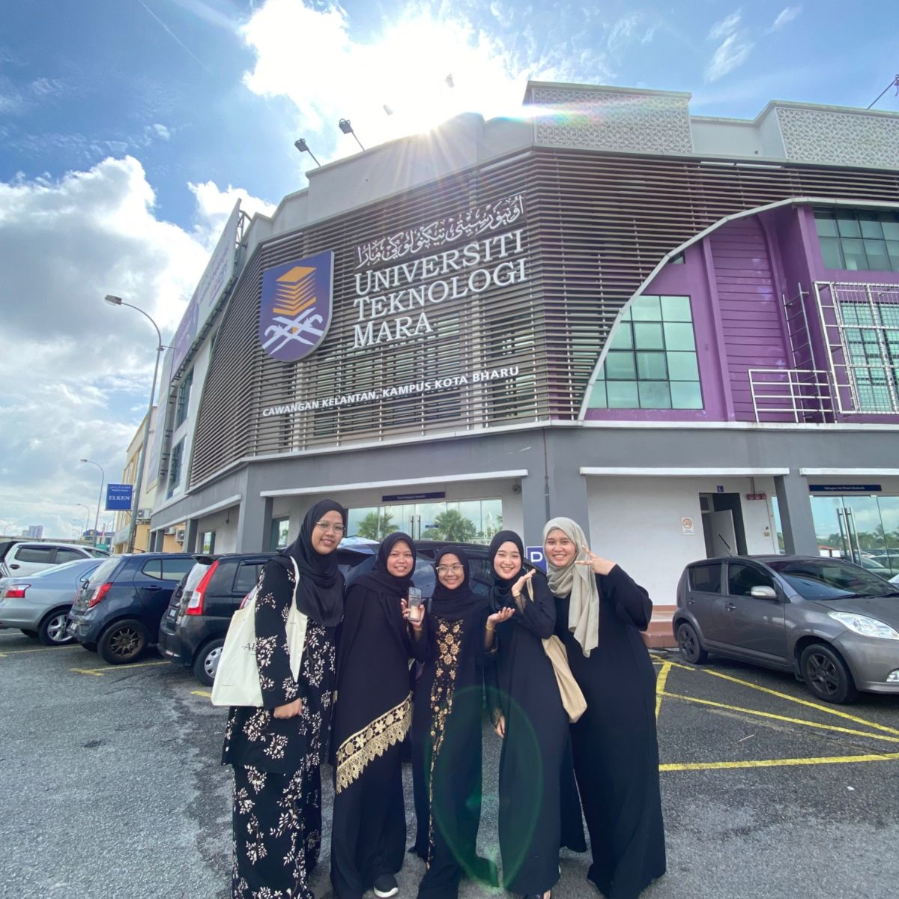
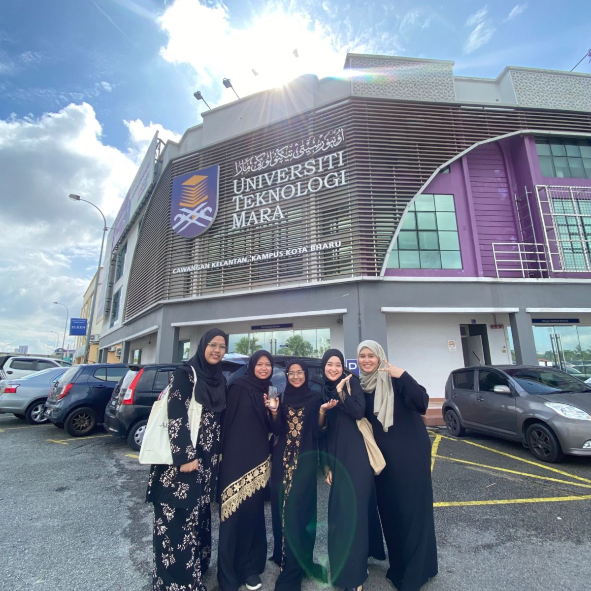
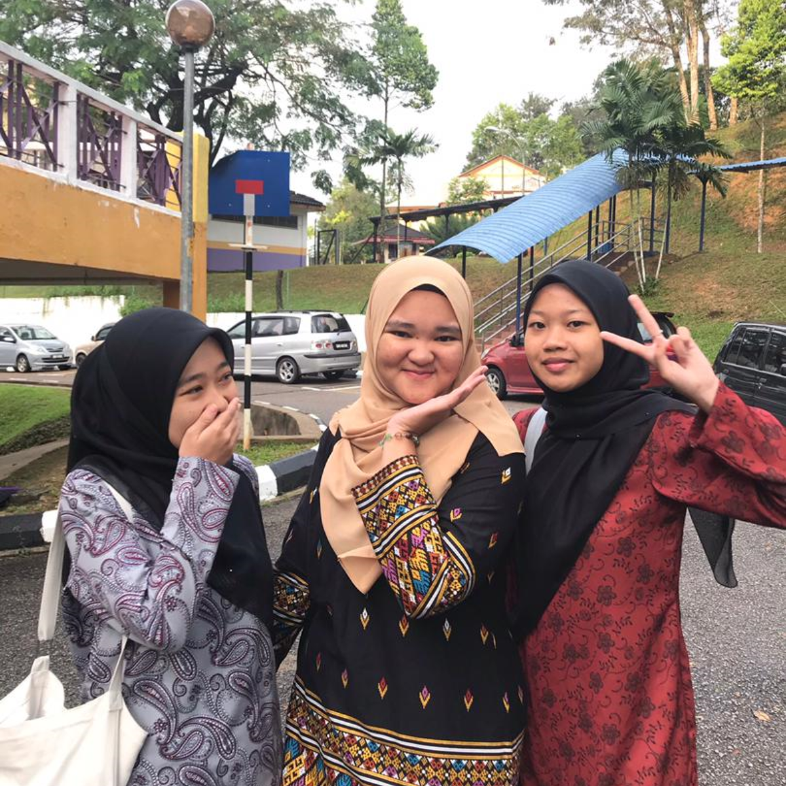
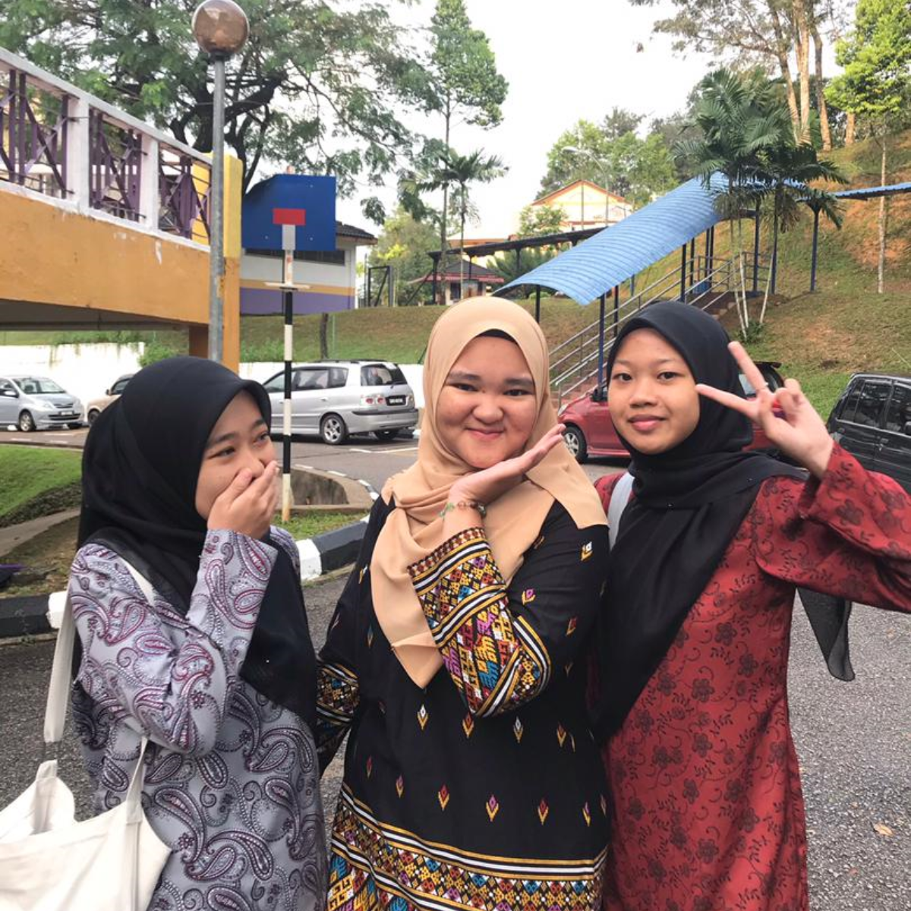
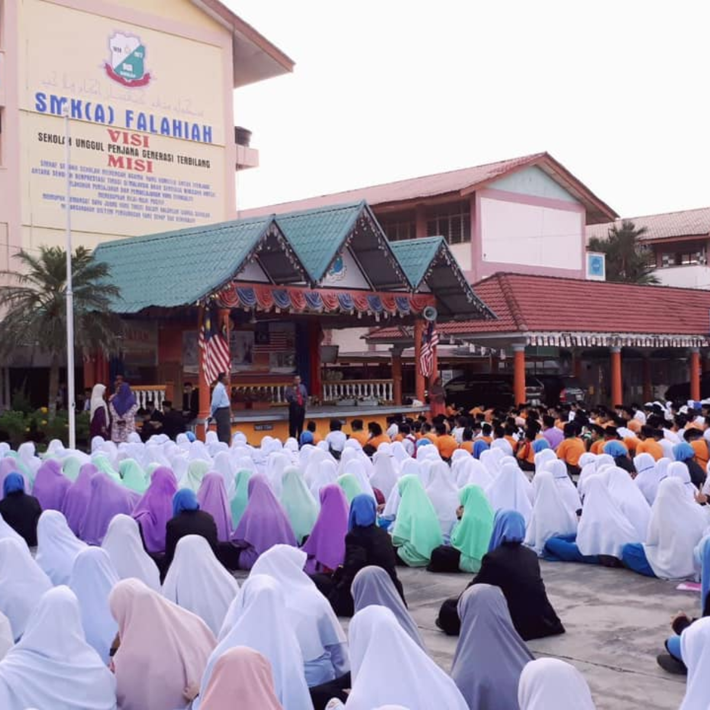
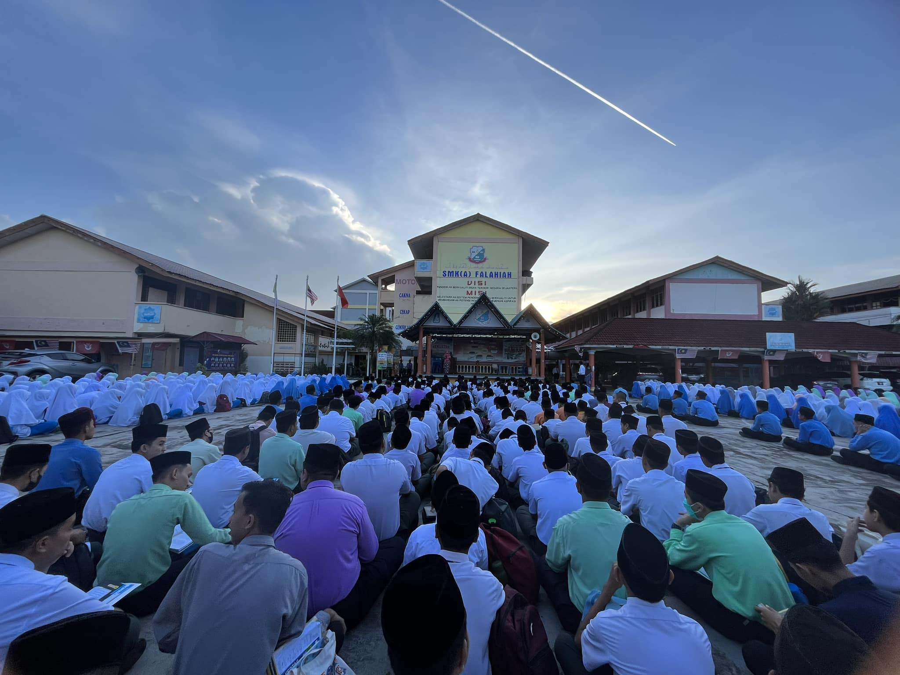

| No. | Institution | Year | Achievement |
|---|---|---|---|
| 1 | UiTM Kota Bharu | 2023 | Degree in Finance |
| 2 | UiTM Machang | 2022 | Diploma in Business Studies |
| 3 | SMKA Falahiah | 2018 | SPM |
UNIVERSITI TEKNOLOGI MARA KAMPUS KOTA BHARU
 

I am currently pursuing my Bachelor's degree in Business Administration with a specialization in Finance at UiTM Cawangan Kelantan Kampus Kota Bharu. This program has provided me with comprehensive knowledge and practical skills to understand the complexities of financial management, and corporate finance.
UNIVERSITI TEKNOLOGI MARA KAMPUS MACHANG
 

Prior to embarking on my degree journey, I successfully completed a Diploma in Business Studies at UiTM Cawangan Kelantan Kampus Machang, achieving the Vice-Chancellor Award with a 3.89 CGPA after receiving the Dean's List for each semester of my diploma. This diploma program was an excellent stepping stone that equipped me with a solid understanding of various business aspects, including marketing, management, entrepreneurship, and organizational behavior.
SEKOLAH MENENGAH KEBANGSAAN AGAMA FALAHIAH
 Sekolah Menengah Kebangsaan Agama Falahiah which is located at Pasir Pekan, is where I completed my secondary education with 3A 5B 2C in Sijil Pelajaran Malaysia (SPM) examination. The nurturing environment and support from my teachers and peers played a crucial role in shaping my character and laying the foundation for my future academic pursuits. It was during these formative years that I honed my study habits, discipline, and communication skills, which have been invaluable assets throughout my educational and professional journey.